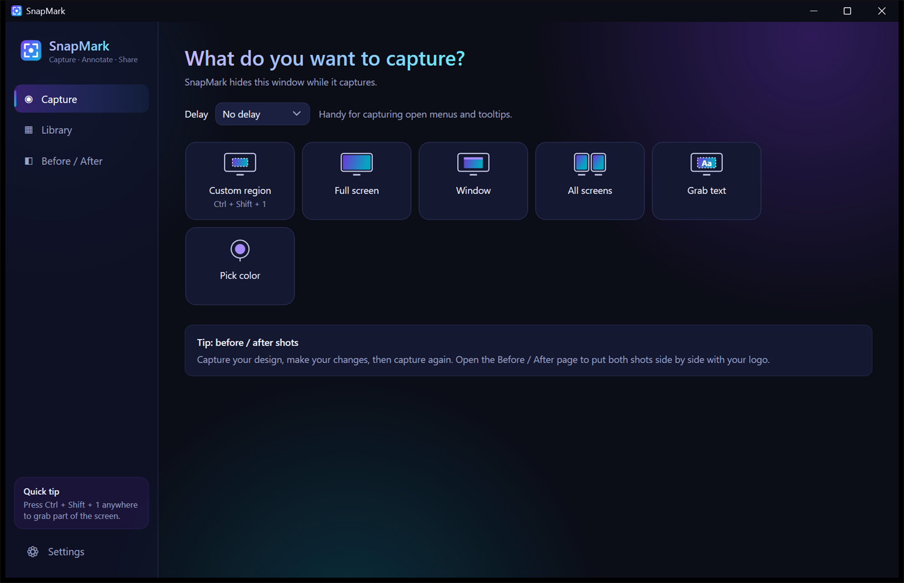
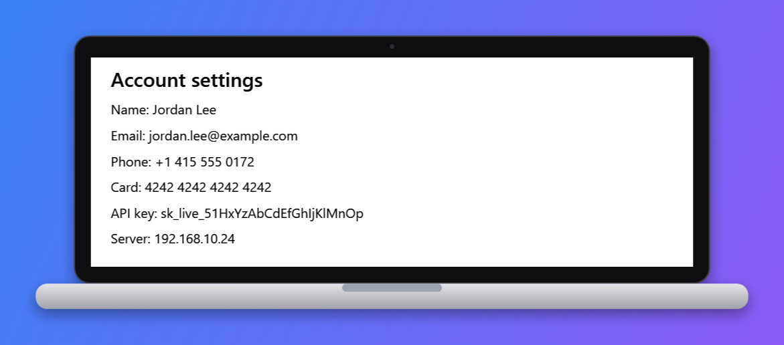
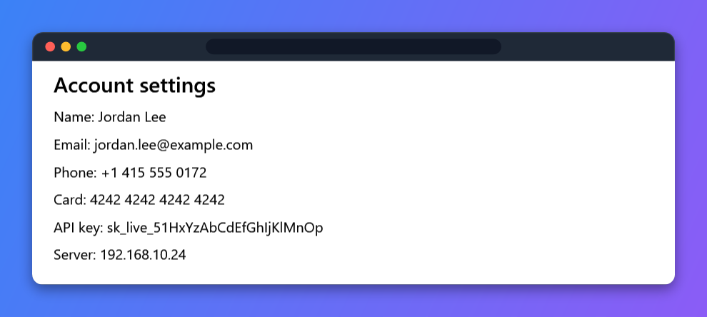
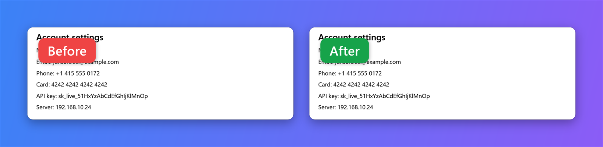

Annotate
Numbered steps in one click
Click, click, click: 1, 2, 3. Add arrows, boxes, highlights, text, freehand pen, a spotlight that dims everything else, and ✓ ✕ ! stamps. Move, resize or undo anything.
Version 1.0 · Windows 10 and 11
Capture any part of your screen, mark it up with numbered steps and highlights, hide private details automatically, and share polished images, PDF guides and client reports in seconds.
No admin rights needed · Updates itself automatically · Everything stays on your PC

Drag over any area, or grab a full screen, a window or every monitor at once, at full native resolution.
Add numbered steps, arrows, highlights, text and stamps. Blur or pixelate anything private.
Copy, save, pin, beautify, or turn it into a PDF guide or client report, straight from the popup.
Everything in one app
No more switching between a snipping tool, an image editor and a PDF app.
Click, click, click: 1, 2, 3. Add arrows, boxes, highlights, text, freehand pen, a spotlight that dims everything else, and ✓ ✕ ! stamps. Move, resize or undo anything.
SnapMark reads the screenshot and pixelates emails, phone numbers, card numbers, API keys and passwords for you.
Every capture keeps each physical pixel at native resolution, so text stays razor-sharp on 4K and scaled displays. Save lossless PNG or small JPEG.
Copy the text out of any image or video frame with built-in OCR, or pick any on-screen color as HEX and RGB.
A quick setup lets you choose every shortcut, what appears in the capture menu, and what happens after each capture.
Browse and search past screenshots, copy them as files for Word or email, export several as one PDF, or pin one above your other windows.
Studio
Drop a screenshot into a browser window, laptop or phone, add a gradient background, rounded corners, a shadow and your logo. Save the look as your brand and reuse it forever.


Before / After
Put two versions side by side, stacked, or split down the middle, with clear Before and After labels.

FAQ
Windows 10 (version 1809 or later) and Windows 11, 64-bit. Nothing else needs installing; SnapMark includes everything it needs.
Yes. The installer isn't code-signed yet, so Windows SmartScreen shows a warning for new apps. Click More info → Run anyway to continue.
SnapMark checks for new versions in the background, downloads them quietly, and asks you to restart when an update is ready. You can also check any time in Settings → About and updates.
No. Screenshots, text recognition and redaction all happen on your PC. There's no account and nothing is sent to a server; the only network request is the update check.
Yes. If Windows' Snipping Tool already uses PrtScn, turn it off in Windows Settings → Accessibility → Keyboard, or pick a different shortcut in SnapMark's setup.
Install takes a few seconds, and SnapMark keeps itself up to date.
Download for Windows What's new in the latest version →